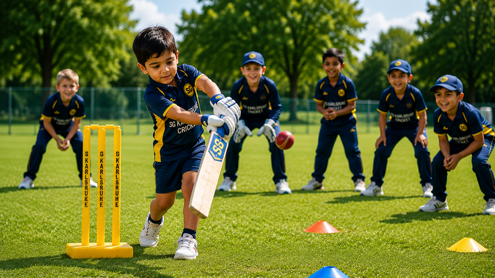
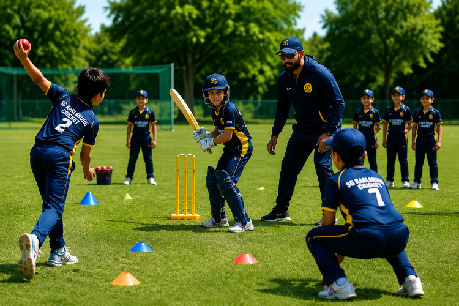
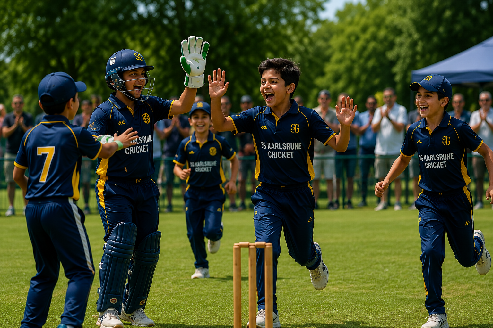
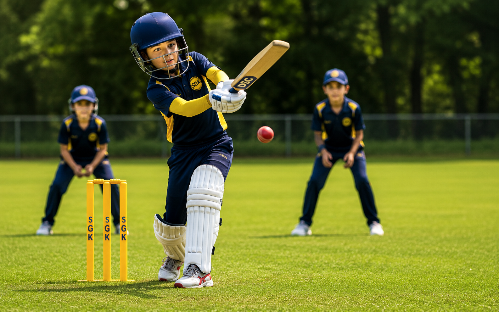
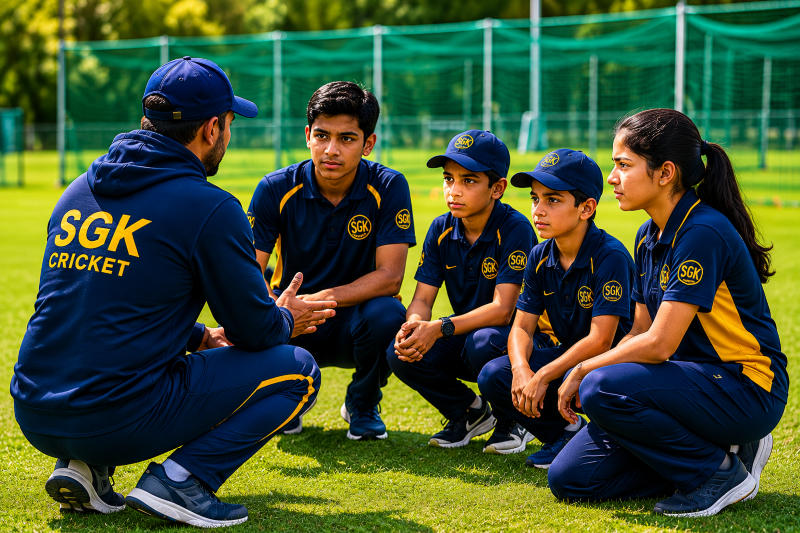
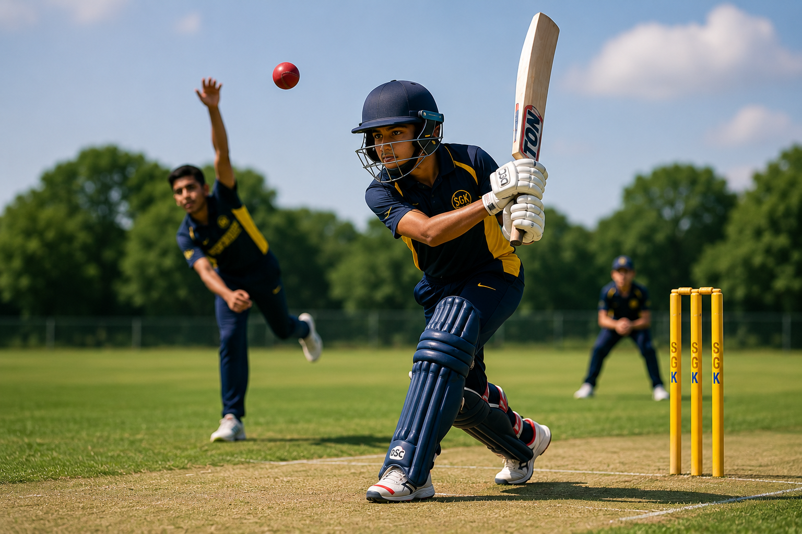
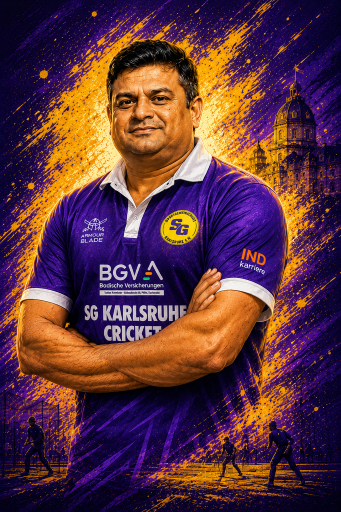
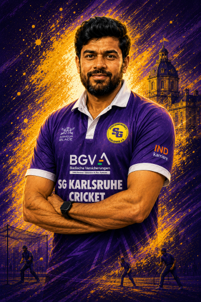
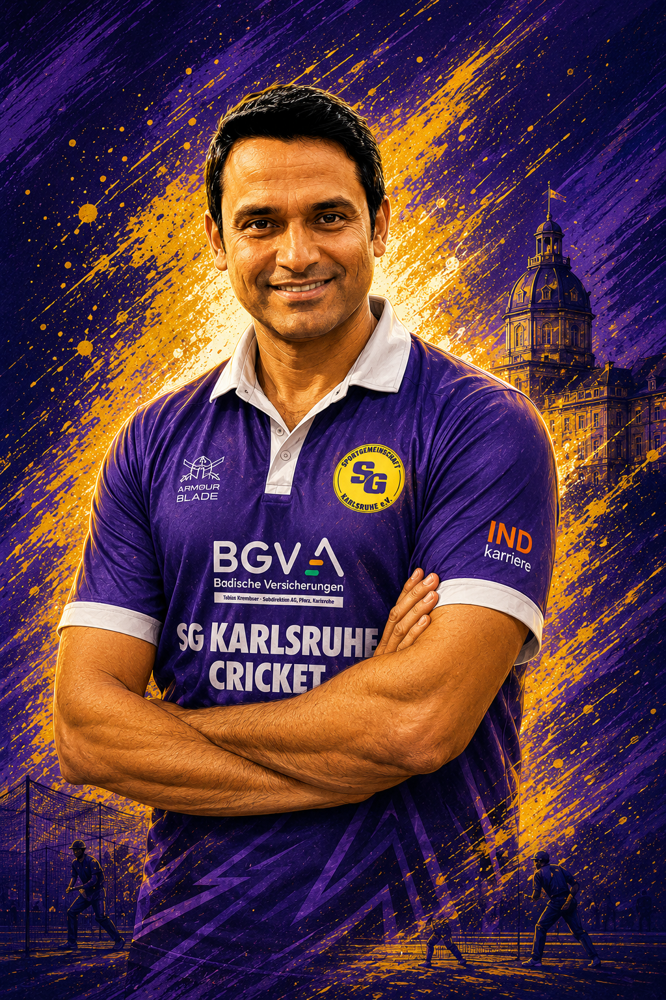

For beginners
Children can start with simple softball cricket, basic movement skills and fun games.
SG Karlsruhe Cricket welcomes children, families, beginners and experienced players. Come for a trial session, learn the game and enjoy cricket with a friendly local community.
We are building a welcoming cricket community in Karlsruhe — with a special focus on children, women, learning, teamwork and enjoying the sport together.
To help young players develop strong character on and off the field, while creating excellent cricket opportunities in South Germany.
Celebrate cricket and unite communities — from children trying the sport for the first time to youth and women who want to train, play and support the game locally.
Children learn batting, bowling, fielding and teamwork through age-appropriate drills, friendly matches and positive coaching.

Children can start with simple softball cricket, basic movement skills and fun games.

Players gradually improve technique, confidence, match awareness and teamwork.

Friendly matches and youth events give children unforgettable cricket moments.
Whether your child is completely new or already loves cricket, there is a path to join, learn and grow at SG Karlsruhe Cricket.

A gentle and fun entry point for young beginners and families discovering cricket.

For players ready to move towards more structured training and match situations.

For developing players who want to progress towards competitive cricket formats.
Our coaches help children learn cricket with confidence, teamwork and fun.

Beginners Coach

Softball Coach

Youth Coach
Head Coach / Cricket Lead
We are more than just a cricket team. Our focus is on creating opportunities for children, families and the wider community to enjoy cricket together.
The easiest next step is to contact us and come for a trial session. Beginners are welcome, and children do not need their own equipment for the first session.
Send us a short message with the player’s age group, cricket experience if any, and your contact details. We will guide you to the right training session.
Contact usEmail: Darren.Mclennan@sg-ka.de
Location: Karlsruhe, Germany
Training times and venues are shared with interested players and parents.